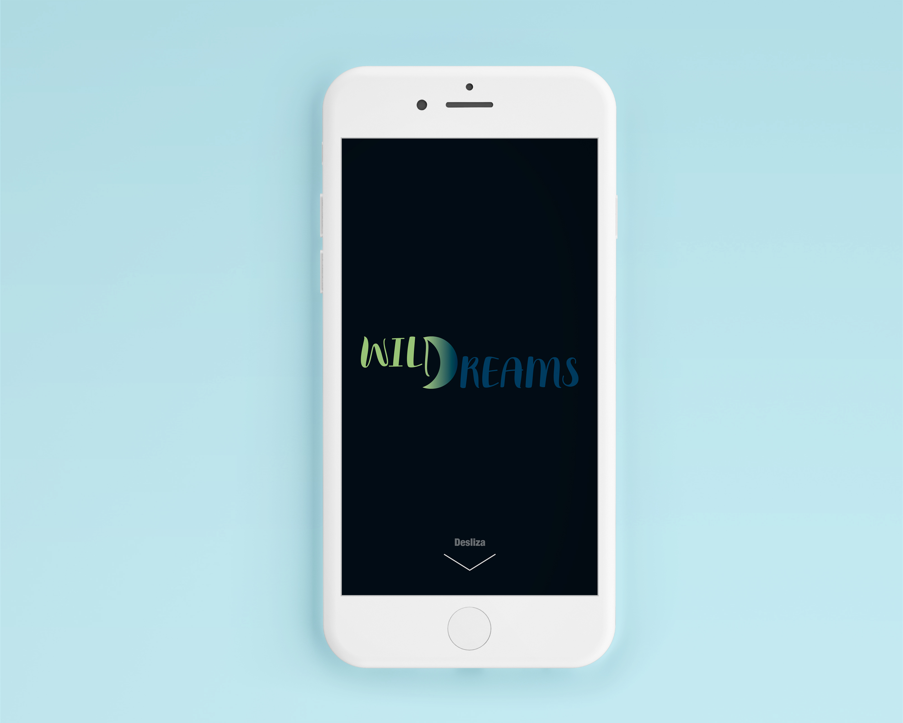
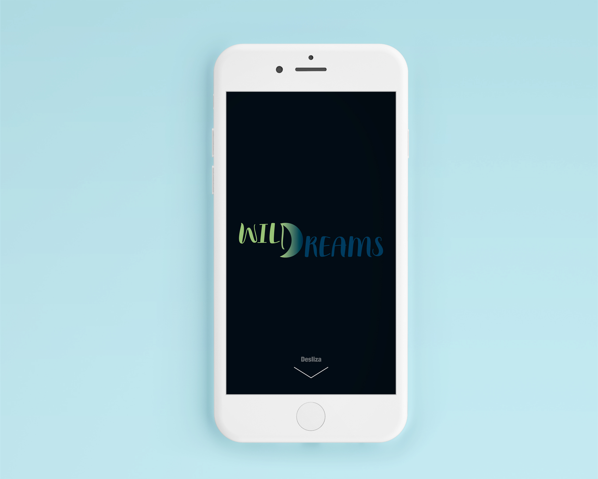

WILDREAMS es un nuevo concepto que nace de la mezcla de dos palabras que son “flor” y “dormir”.
Junta el placer de dormir con la naturaleza. Pero, ¿qué es?:
Es un hotel en medio del bosque, donde su atractivo es que en vez de dormir en una cabaña lo
haces en unas hamacas que están atadas a los árboles. Para los menos aventureros, tendrán una cabaña central que cuenta con baños y otras comodidades similares a las de un hotel. Brindando una experiencia inolvidable de real contacto con la naturaleza y para todos los gustos.
Tipografía y colores

Variaciones de la marca
 
